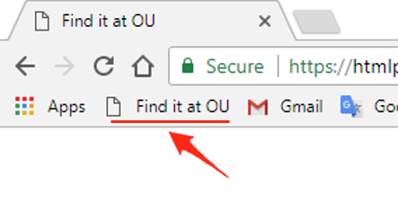

Find it at OU
Bookmarklet that tries to give you access to papers behind the paywall*.
How to install
Drag this link Find it at OU and drop it into your Bookmarks bar
Try and see how it works
Follow this paper http://www.sciencedirect.com/science/article/pii/S0950705117303271 and hit the button "Find it at OU" from your Bookmarks bar.
* The paper will be accessible only if the OU does have a subscription for that venue.